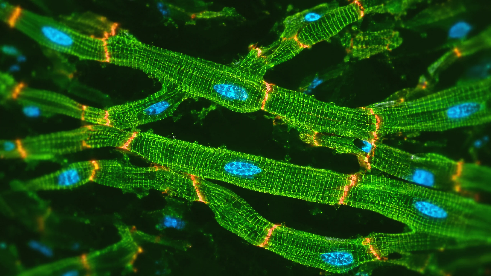
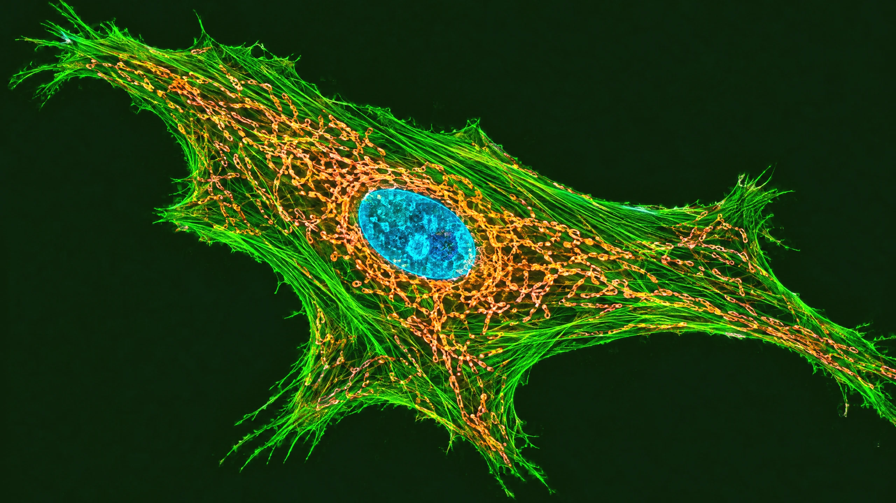
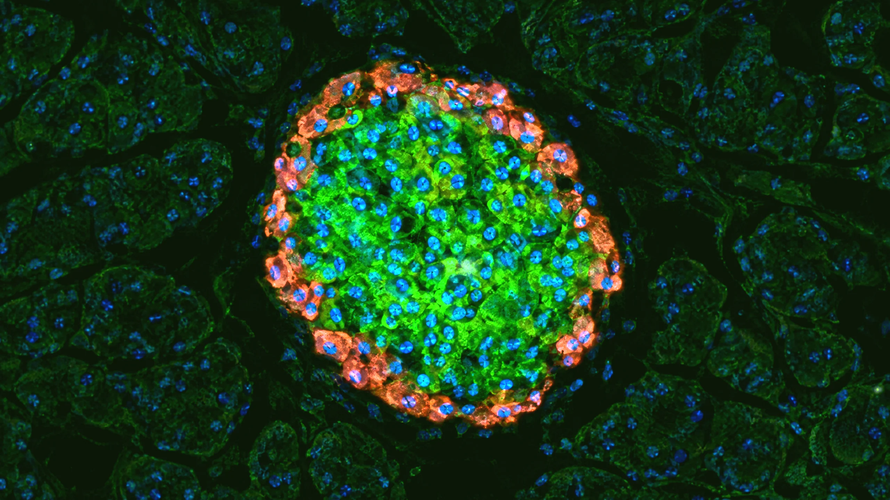
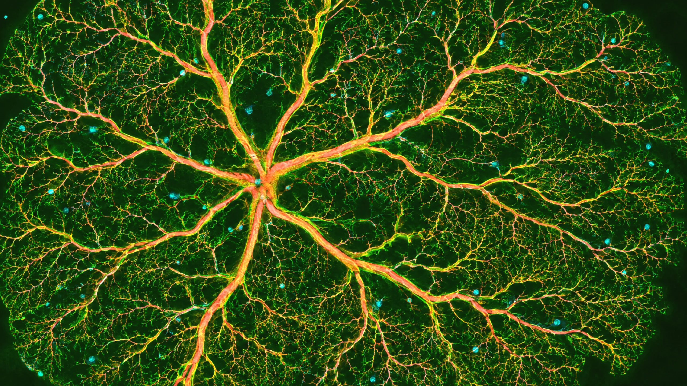
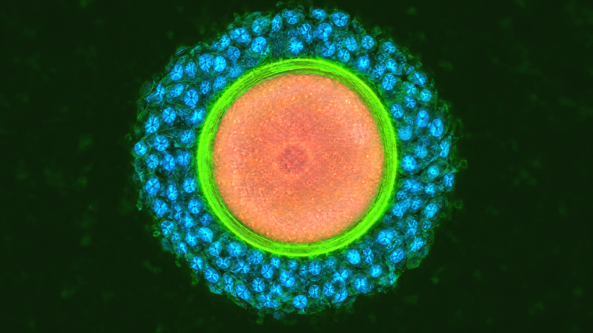
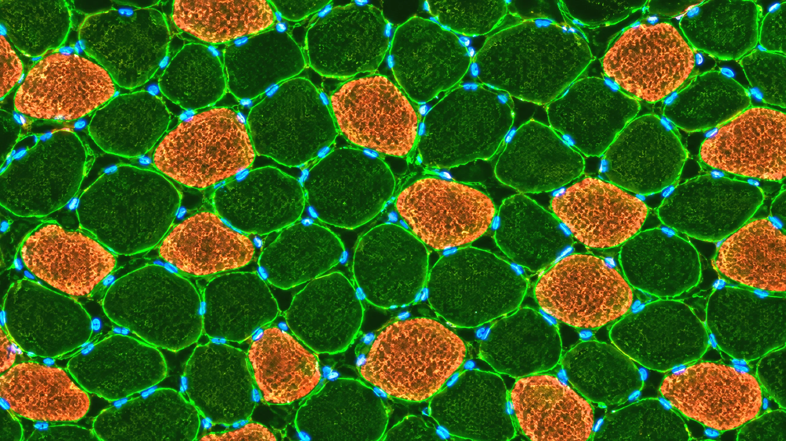
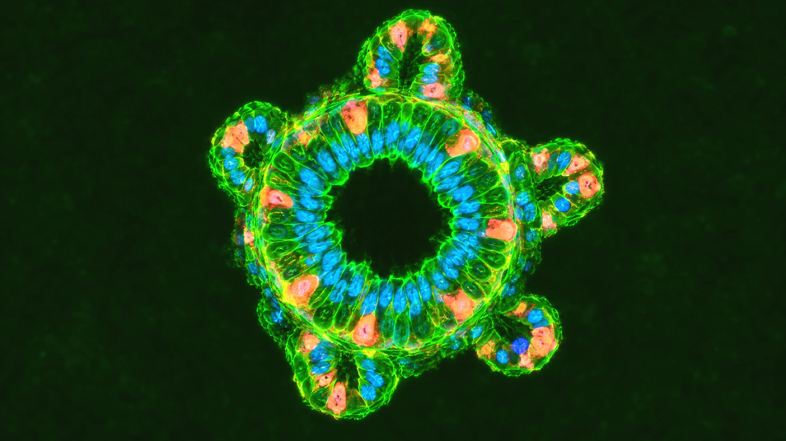

One micrograph per frame. Fluorescence goes on Forest Night grounds and brightfield on cream, never the other way round. The stain palette is fixed. These are generated, illustrative images: never present one as a member's sample or a lab result. The README has the rules and the recipe.
Fluorescence · graded onto night-950 #0B1608

cardiomyocytes.webp · heartneurons.webp · brain

mitochondria.webp · energy, VO₂ max

islet.webp · metabolic health

retina.webp · vessels, ApoB

oocyte.webp · menopause, fertility

muscle.webp · strength, VO₂ max

organoid.webp · gut
leaf green · structurecoral · the subjectcyan · nuclei